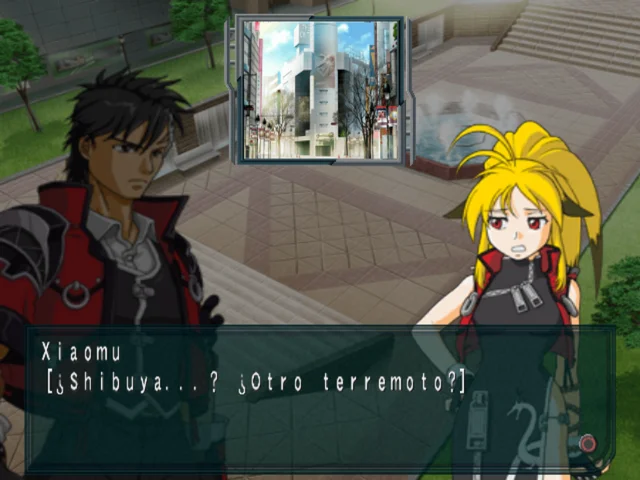

PlayStation 2RPG tácticoVersión 1.2Primera traducción al castellano
Namco x Capcom
El gran crossover de 2005 que solo salió en Japón: Ryu, KOS-MOS, Megaman, Jin Kazama y decenas de personajes más en una sola aventura. Más de 24.000 líneas de guion traducidas.
- Guion completo con los pensamientos de los personajes, menús, objetos, técnicas y biografías
- Rótulos de lugar y condiciones de victoria de cada misión en castellano
- Combate traducido, con los nombres oficiales europeos de las técnicas
- Gráficos con texto, pantalla de resultados e imágenes del final en castellano
- Tutorial y pantalla de título redibujada
- Basada en el parche inglés de TransGen (con su crédito)
Necesitas: la versión japonesa (SLPS-25505) con el parche inglés de TransGen, en .iso o .chd.